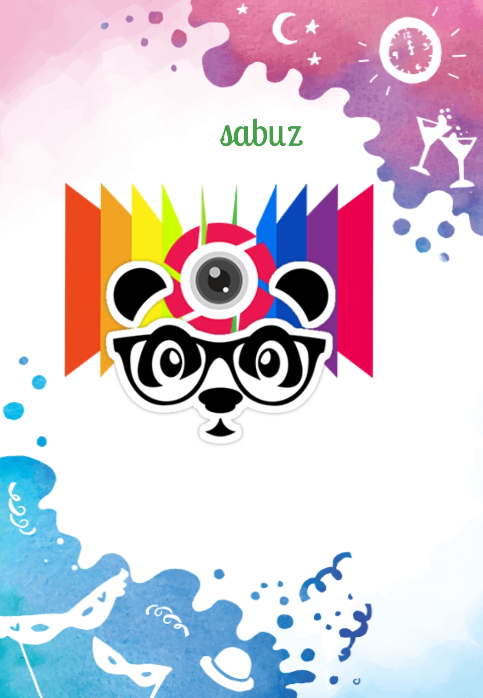

| HOME | ABOUT | PORTFOLIO | GALLERY | CONTACT |

|
My College Life
College life is a person’s golden period of early youth. He remembers it in his whole life. He can never forget it. The pericd of college life may be two years of intermediate classes. It may include two more years of graduation.
College life is a life of freedom. There is no fear of teachers. The teachers behave in a friendly manner. The students feel no compulsion in studies. They develop a sense of duty and study. They may go to the library or canteen or playground in spare time. They may move with friends of their own choice. They develop self-confidence. They realize self-importance. They learn good manners. They dream of becoming officers after studies.
Functions, tours, and sports are other aspects of college life. They are very happy occasions. They are memorable events of the student’s life. The students enjoy them very much. On these occasions, they take photographs of friends, teachers and distinguished guests. They also take photographs of attractive scenery.
‘College life’ is that phase in one’s life when one learns the most important lessons of life.’
A College is dreamland of a student’s academic career. It is a fascinating panorama of enjoyment, freedom and friendship. Sweet memories and pleasures of college life are simply amazing. The first and the last day, group Of friends, unexpected holidays, functions of Curricular and extra-Curricular activities and adventures at hostels make College life the most memorable and unforgettable part of life.College life has some pitfalls also. Some students misuse the liberty. They give up their studies. Some students develop quarrelsome habits. They form terror groups. They disturb college administration. They tease other students. So their educational career is destroyed. Some students are misguided by selfish politicians. They like sabotage and strikes. Some students take too much interest in sports and other co-curricular activities. They ignore their studies. The students should avoid such harmful things still.
Conclusion
In the end, I can say that college life is a beautiful blend of joys and memories. On the whole, every day spent in college is loaded with some colorful events such as freedom, special breaks, matches and functions. No doubt college life is an ideal part of academic life. Its charms can never fade away.
My School LifeSchool life is the best period of human life. People are learning from his childhood in the school, and also a school built the character of the man. It is the formative period for everyone. Every student should try to make his better life and best use of school life because it never comes again after the school session Due to the school life is but a preparation to face the challenges that the more prominent school called world will offer us once we are out of our schools. The institutions therefore other great influence upon us. They shape our character, mold our mental attitudes and fashion the basic principles of life. |
 |
My University LifeI found it relatively easy to decide which course to do, it was where to go which I found harder to decide. As good as a course might be, I think it is equally important to live in a town or a city which you can relate to. I'm in my second year, so I share a house with friends. It was difficult at first, what with doing your own washing, ironing and cooking, but you soon get used to it. Last year I would just eat chips and beans and spend the rest of my money on beer, but this year I'm trying to cut down on the chips and beans and eat a bit more healthily. |
Copyright:All right resereved by © SABUZ AHMED. |
⟰ |